Marmix
UX/UI Designer • Website Redesign & Build
Hover the preview to scroll the full homepage →
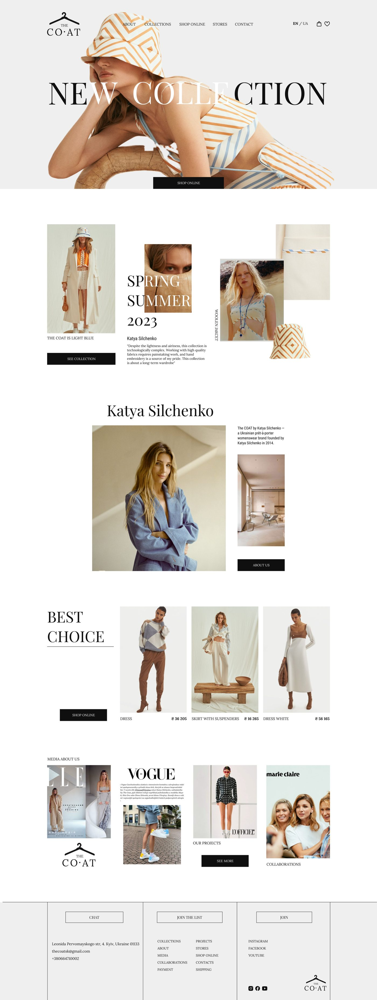
A quick glance of the homepage and a product page from Marmix's redesigned website.
01Overview
Marmix is a ready-mix concrete manufacturer near Lublin, delivering concrete and building materials within roughly a 40 km radius to two very different audiences: construction firms working to a schedule, and individual investors pouring their first foundation.
Their website dated back to 2015 and no longer matched the scale of the business. Marmix asked for a site that would win more work — not just look nicer. I took the project end to end: audit, research, information architecture, UI design in Figma, and the build itself in WordPress and Elementor.
02The problem
The old site quietly worked against the business. It made a serious manufacturer look small, and buried the offer so buyers couldn't find what they came for.
- Dated 2015 theme. Dark and cramped — it read like a hobby project, not a supplier you'd trust with a delivery.
- Eight-item menu. The offer was lost under walls of SEO text and stacked tabs.
- Broken gallery. Empty image placeholders sat where proof of work should be.
- Passive contact. The phone number sat in a corner with no clear call to act.
- Hidden calculator. A genuinely useful tool buried inside a bare, unlabelled form.
- No buyer answers. Nothing on delivery area, concrete classes or pump availability.
Before & after
The same pages, rethought
Four key pages, shown as the buyer first sees them — the 2015 site on the left, the redesign on the right.
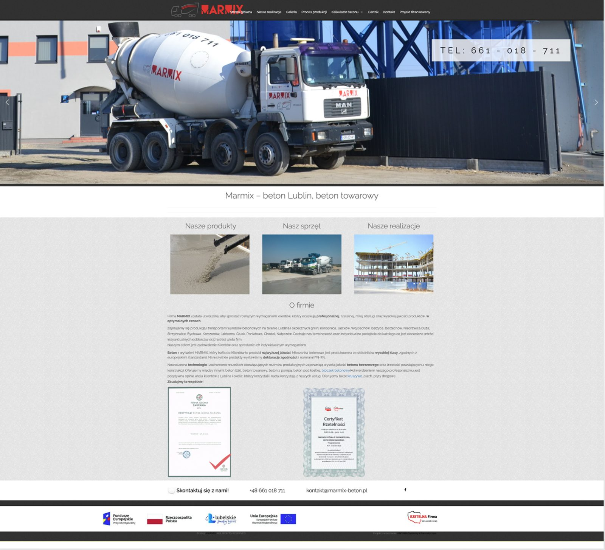
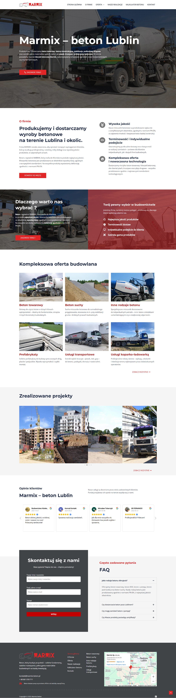
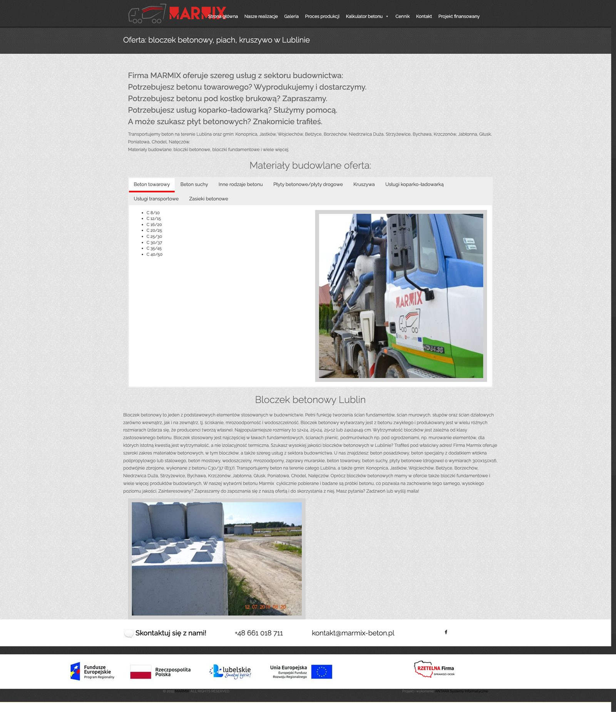
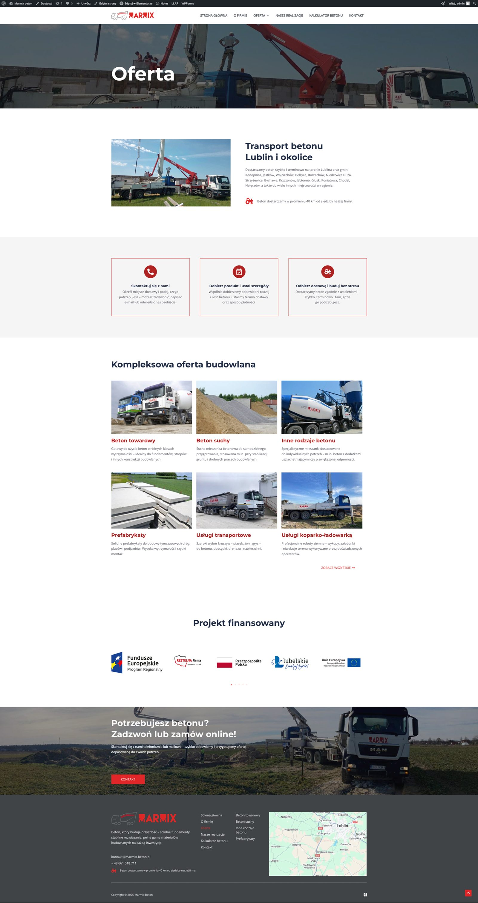
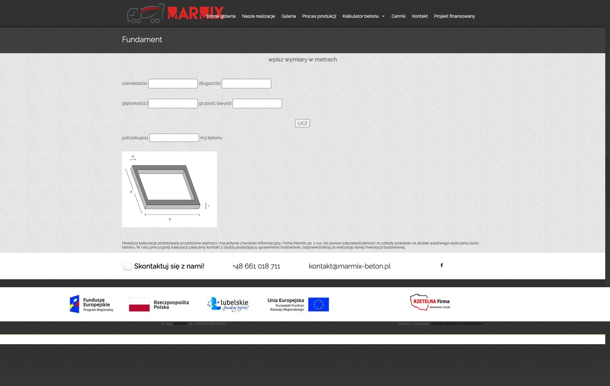
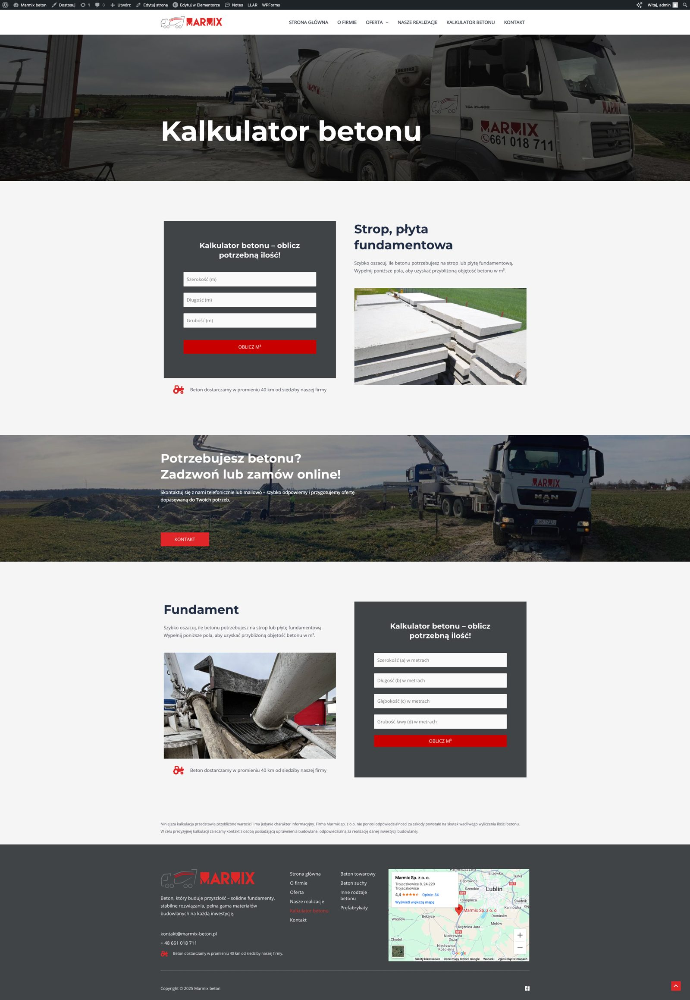
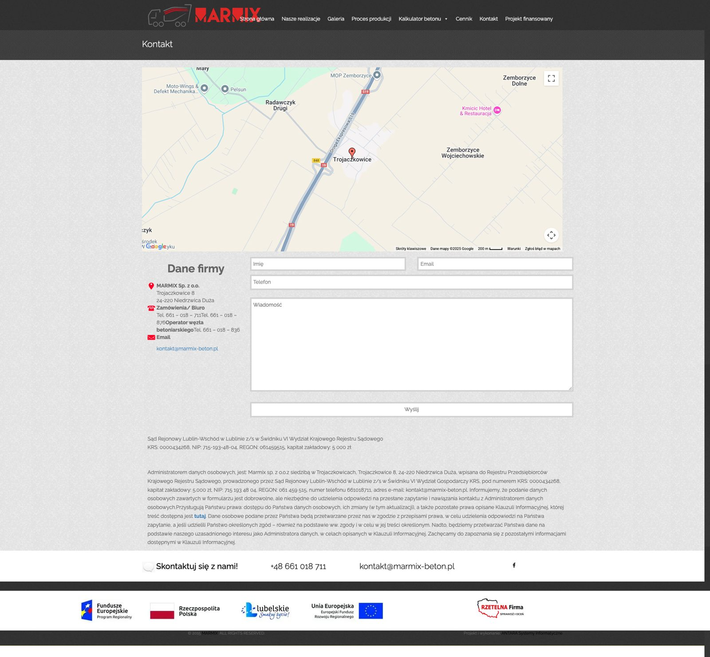
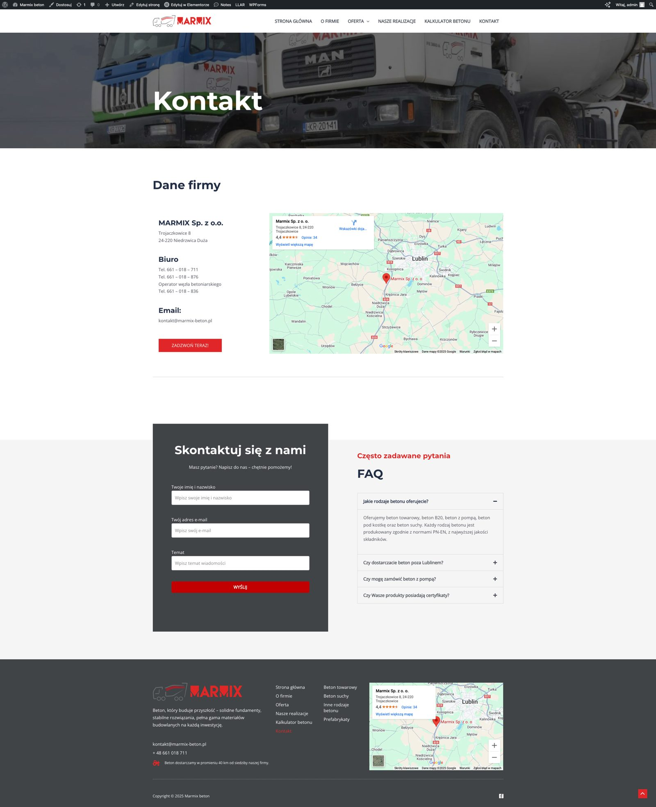
03Design process
I ran a heuristic audit and a competitive scan of regional suppliers, then reframed the whole project around the two buyers — the contractor who decides fast, and the first-time investor who needs guidance and reassurance.
- Audit & research A heuristic review of the old site and a scan of competing suppliers in the region.
- Information architecture Eight scattered menu items collapsed into a focused six, with the whole range grouped under one clear “Oferta”.
- UI in Figma Wireframes to high-fidelity screens, designed mobile-first.
- Build Approved screens built and shipped in WordPress and Elementor.
A few decisions did most of the work: one message and a single “Zadzwoń teraz” action in the hero; the offer as a scannable six-tile grid; a three-step ordering path (get in touch → choose the product → receive the delivery); and trust made visible through benefits, certificates, EU-funding marks and an FAQ.
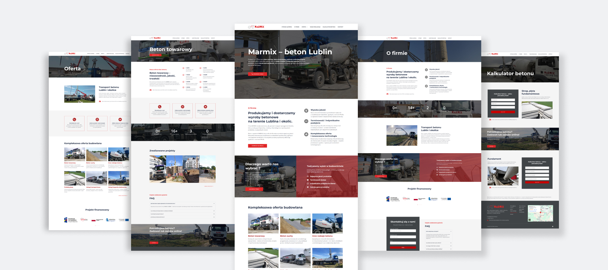
The final approved designs. Left to right: homepage, offer, product page, concrete calculator, contact.
Responsive
Designed mobile-first
Most people reach Marmix from a phone — a contractor checking the offer on-site, an investor comparing suppliers on the sofa. Every screen was designed mobile-first, so the hero, the offer grid and the concrete calculator all stay legible and easy to tap on a small screen.
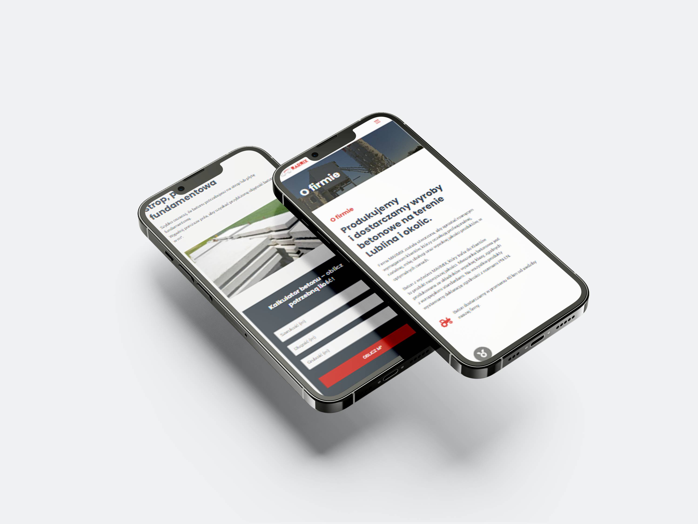
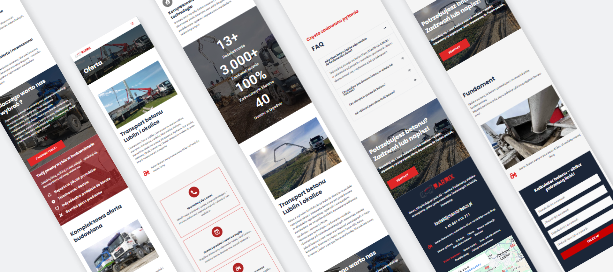
04Solution & results
The result is a site that's modern, trustworthy and built to convert. The offer is finally legible, every page leads toward a call or an enquiry, and the calculator gives buyers a reason to engage before they get in touch. Because it's built in WordPress, the team keeps it up to date themselves.
The redesign at a glance — measured by design decisions, not vanity metrics.
View the live site
To see the redesign in action — the clearer offer, the ordering path and the rebuilt concrete calculator — visit the live Marmix website.
Visit marmix.pl → Yuliia — podmień adres na prawdziwy URL strony Marmix, jeśli jest inny niż marmix.pl.Read more of my case studies
👋 Get in touch at
julidovha05@gmail.com